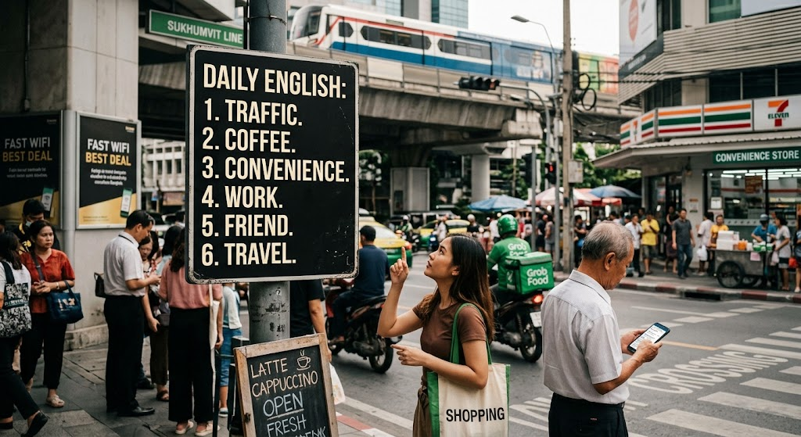

คำศัพท์ภาษาอังกฤษในชีวิตประจำวัน
คำศัพท์ภาษาอังกฤษเป็นพื้นฐานสำคัญของการเรียนรู้และการสื่อสารภาษาอังกฤษ เนื่องจากคำศัพท์ช่วยให้ผู้เรียนเข้าใจความหมายของประโยคและสามารถถ่ายทอดข้อมูลต่าง ๆ ได้อย่างถูกต้อง คำศัพท์ที่ใช้ในชีวิตประจำวันมีหลากหลายหมวดหมู่ เช่น คำศัพท์เกี่ยวกับครอบครัว โรงเรียน อาหาร เครื่องแต่งกาย การเดินทาง และกิจกรรมต่าง ๆ การเรียนรู้คำศัพท์อย่างสม่ำเสมอช่วยเพิ่มคลังคำศัพท์และพัฒนาทักษะการฟัง พูด อ่าน และเขียน ตัวอย่างประโยคภาษาอังกฤษที่ใช้คำศัพท์ในชีวิตประจำวัน ได้แก่
I eat breakfast every morning.
แปลว่า ฉันรับประทานอาหารเช้าทุกเช้า โดยคำว่า eat หมายถึง รับประทาน breakfast หมายถึง อาหารเช้า และ morning หมายถึง ตอนเช้า ตัวอย่างนี้แสดงให้เห็นว่าการเรียนรู้คำศัพท์และวิธีนำไปใช้ในประโยคช่วยให้ผู้เรียนสามารถสื่อสารภาษาอังกฤษในสถานการณ์จริงได้อย่างมั่นใจ